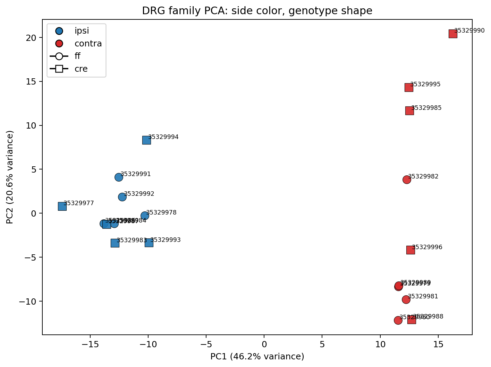
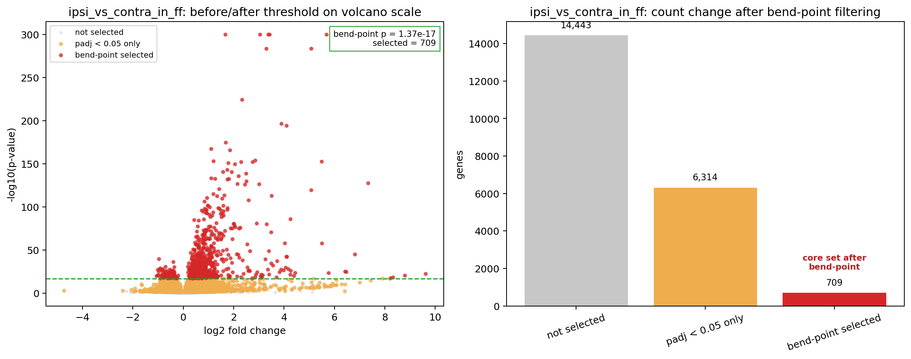
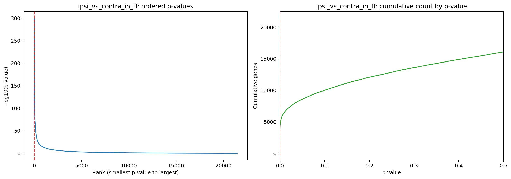
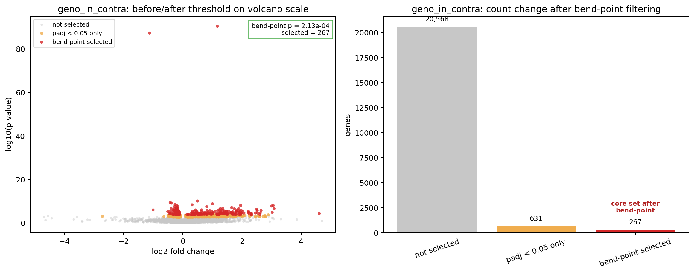
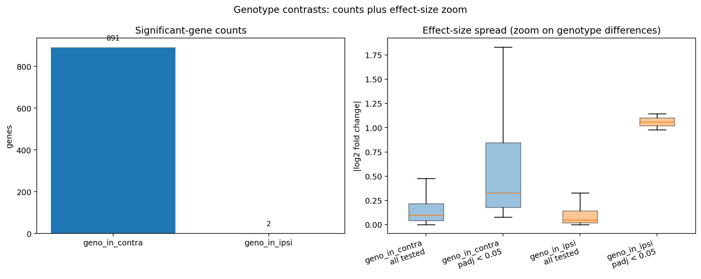
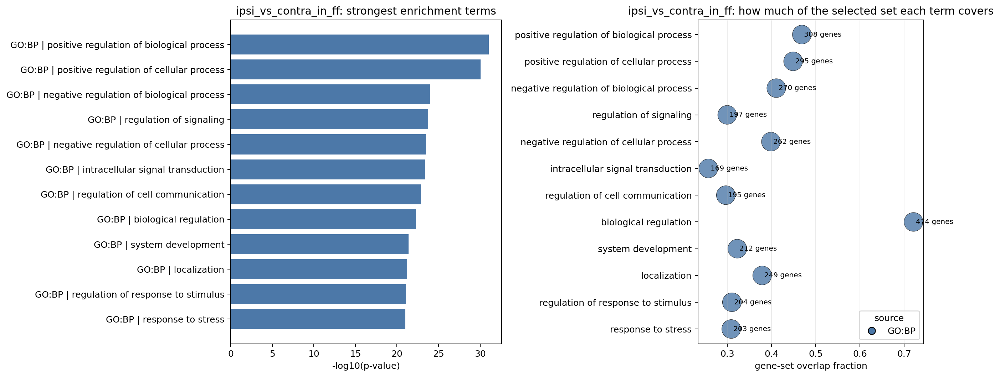
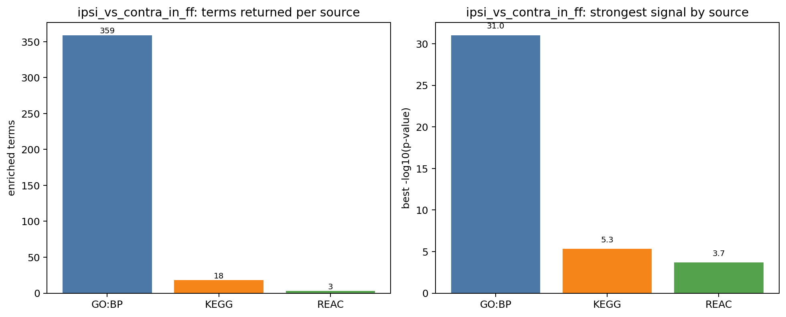

Since the previous differential-expression report, we shifted from simply exporting DE results to interpreting the
mouse_new contingency dataset and deciding which part of the signal is strong enough to guide both the next weekly
report and the first paper draft. Using the current SRP618841 notebook and derived-analysis outputs, we reviewed
the dataset structure, re-plotted the main contrasts, and added transcript-guided follow-up analyses so the results would
be easier to understand instead of remaining a large list of significant genes.
The clearest conclusion from this follow-up is that the main side-specific DRG contrasts remain the strongest and cleanest
signal in the dataset, while geno_in_contra is the strongest secondary branch. In contrast, geno_in_ipsi
and interaction remain exploratory and are not the best lead story for either the report or Draft 1.
The current follow-up keeps the same DESeq2 result framework from the canonical mouse_new notebook, but the emphasis
is now interpretive rather than purely procedural. Following class feedback from Apr 1, we treated PCA as the first sanity check,
used the DE plots to compare signal strength across contrasts, and then applied an ordered-p-value / cumulative bend-point
method to narrow very large gene lists into smaller follow-up sets for enrichment and story selection.
geno_in_contra.
The strongest class feedback this week was that our DE interpretation should begin with what the data structure is telling us,
not with an arbitrary top-gene list. The Apr 1 discussion emphasized three things that now guide this report: first, PCA should
be interpreted before gene-level claims; second, very large DE lists should be narrowed with a reproducible rule rather than a fixed
top-N; and third, enrichment should be used to interpret a principled gene set instead of replacing direct reading of the
main DE signal.
We also took seriously the concern that genotype labels should not be over-interpreted if the PCA structure does not cleanly separate
ff and cre on the leading components. The updated annotated PCA now makes that point much clearer: side class is
the dominant organizing axis, while genotype is present but secondary.
This follow-up is not meant to restate the earlier DE package. Instead, it records what changed once we slowed down and interpreted the
current mouse_new outputs more carefully. Three shifts matter most. First, the annotated PCA makes it much easier to see that
side class explains more of the visible structure than genotype. Second, the side-specific DRG contrasts still carry the strongest signal
after we apply a principled narrowing rule. Third, geno_in_contra is the one genotype branch that still adds useful context
without competing with the main story.
The practical result is that the report is now more selective. We are no longer treating every contrast as equally useful. We are instead
using the strongest side-specific contrasts as the center of interpretation, keeping geno_in_contra as support, and leaving
geno_in_ipsi and interaction in an exploratory category until they hold up better under stricter interpretation.

| Side class | Closest ff/cre pair |
PCA distance | Interpretation note |
|---|---|---|---|
| ipsi | SRR35329986 vs SRR35329987 | 0.27 | Very close cross-genotype pair |
| ipsi | SRR35329984 vs SRR35329987 | 0.67 | Another near-overlap in the same side class |
| contra | SRR35329980 vs SRR35329988 | 1.18 | Cross-genotype proximity also appears in contra |
This annotated PCA is the correct first read of the dataset because it shows the baseline structure before any gene-level filtering.
Color now tracks side class and shape tracks genotype, which makes the main pattern much easier to see: the side-specific split is clearer
than the genotype split. Some ff and cre samples are still close together in PCA space, which supports treating
genotype as secondary rather than as the primary organizing signal.
This table comes from the derived collision summary and directly answers the class concern: some ff and cre samples
are genuinely close in PCA space, so genotype should be interpreted as a secondary axis in this report.


This compact figure set keeps only the two views that add distinct information: the before/after comparison and the ordered p-value curve with the bend-point marked directly. Together, they make the threshold logic clearer without repeating the same signal a third time.
This is the clearest place where the class feedback changed our approach. The question is no longer “how many significant genes are there?” but rather “what is the strongest interpretable core of this signal, and does that core still support the same biological story?” For this contrast, the answer is yes.


This is the strongest genotype-specific supporting branch. It remains weaker than the side-specific DRG contrasts, but it is not zero, and the
before/after view shows that the secondary genotype signal still has an interpretable core. That is why geno_in_contra stays as
supporting context while the side-specific DE signal stays at the center.


This enrichment block now keeps only the two non-redundant views: the combined term-plus-overlap figure and the source summary. The themes remain broad regulation, signaling, and development/localization, and they are treated as support for the DE story rather than a replacement for direct reading of the contrast.
The current DE follow-up points us in a clearer direction than the earlier package-only stage. The strongest story in the data is not that every
contrast should be treated equally. It is that the DRG dataset shows a strong side-specific differential-expression pattern, and that this pattern
remains the best anchor for interpretation after applying a principled narrowing method. The genotype branch matters, especially in
geno_in_contra, but it is better used as supporting evidence than as the main claim.
This also clarifies how to read the class feedback. The point was not to add more analysis for its own sake. The point was to make the results easier to explain: start with the structure, show the strongest contrast clearly, explain how the large DE list is narrowed, and then use enrichment to help name the biological themes in that narrowed set.
This report follow-up helps the team move toward Draft 1 in the way described in paper_strategy_story_first.md. The DE interpretation is now
closer to a paper-ready structure: the main claim candidate is the side-specific DRG signal, the strongest evidence is the two main side-specific contrasts,
and the supporting evidence includes QC/alignment confidence, PCA structure, and the secondary geno_in_contra branch. That gives the team a clearer
starting point for Draft 1 than simply carrying forward a large list of DE tables.
geno_in_contra as the main supporting genotype branch and avoid over-centering geno_in_ipsi or interaction.